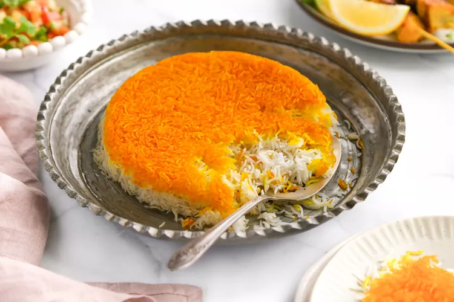

Tahdiq

Desciption
'Tahdiq' is a traditional Persian rice dish, and in fact refres to the 'crust' of toasted rice, though this can also be potato, and even bread.
Traditionally, the rice that forms the tahdiq is infused with saffron for colour, taste, and fragrence.
Ingredients
- Good quality rice. Any long-grain rice will do, but jasmin rice is best. Short grain rice, like sushi rice, will not work properly.
- Saffron
- Butter, or Ghee
- A mild tasting oil, preferrably some kind of vegetable oil.
Steps
- Take a good sized, metal pot, with tall sides, and potion out the rice you want.
- Wash the rice well by filling the pot with cool water and gently swishing the rice around. You will notice the water become cloudy with starch. Pour the water out, and repeat four or five times. The more thorough this step, the better the rice will be.
- Once the rice is washed, boil some water - enough to cover the rice so that ,if touching it with a finger, the water reaches your first knuckle.
- Once boiled, add the water to the rice and boil it with a lid on a high heat for 10-15 minutes. Be careful not to cook the rice fully at this stage, you want the rice to be uncooked in the middle.
- While boiling, grind some saffron into a bowl and and water. We will use this to give flavour to the tahdiq crust.
- When the partial boil is finished, remove the rice from the heat, and empty it into a seive or colander. Take some of the rice and put it in the saffron water - you want enough to coat the bottom of the pot.
- Set the cold water running and use it to wash and cool the rice.
- Take the pot and put a generous drizzle of oil on the bottom, then add the saffron rice. Make sure you do not pour excess water into the pan - there should be no water visible above the rice.
- Now take the cooled rice and sprinkle it, gently, into the pan. Take small handfull and wiggle your fingers to drop it in. We want space for air to get between the rice to make it fluffy. Don't worry about water at this stage, we need the little left on the rice.
- You should be left with a mound of rice in the pan.
- Using a finger or wooden spoon poke five holes deep in to the rice, arranged like the face of a dice. Then put a good size piece of butter or ghee into each hole.
- Make sure you hob is on a medium-high heat.
- Take a clean tea-towel and wrap up the lid of the pot in it. This will allow us to steam the rice, cooking it gently and making it fluffly.
- Put the lid firmly on the pot, and leave it on the heat for at least half an hour.
- Check the rice after half an hour/forty-five minutes has passed, it should be nice a fluffy. If it seems theres still a lot of moisture leave it a little while longer.
- Once you're happy it is ready flip the pot onto a plate and serve.